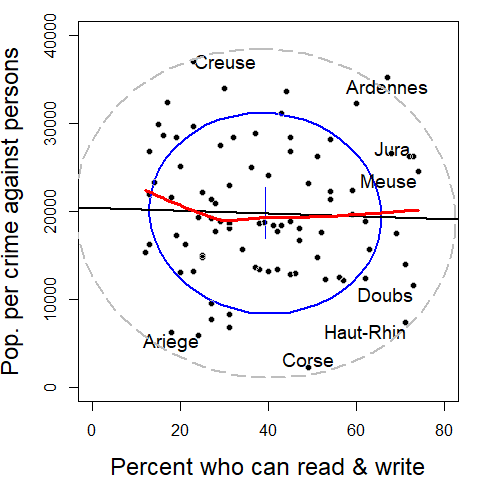

Version: 1.8.4
The Guerry package comprises maps of France in 1830, multivariate data from A.-M. Guerry and others, and statistical and graphic methods related to Guerry’s Moral Statistics of France. The goal is to facilitate the exploration and development of statistical and graphic methods for multivariate data in a geo-spatial context of historical interest.
The package stems from Friendly (2007). For a history of André-Michel Guerry and his work, see Friendly (2022), The Life and Work of André-Michel Guerry, Revisited.
This figure shows a reproduction of six choropleth maps Guerry used to discuss the relations among the main “moral variables”. All of these are scaled so that more is better. Guerry asked, do such patterns reflect simply individual behavior, or are there laws to be discovered in his data?

Installation
You can install Guerry from CRAN or the development version as follows:
| Version | Command |
|---|---|
| CRAN | install.packages("Guerry") |
| Devel | remotes::install_github("friendly/Guerry") |
| R-universe | install.packages('Guerry', repos = c('https://friendly.r-universe.dev')) |
Data sets
The Guerry package contains the following data sets:
| Name | Description |
|---|---|
gfrance |
Map of France in 1830 with the Guerry data. It is a SpatialPolygonsDataFrame object created with the sp package. |
gfrance85 |
The same for the 85 departments excluding Corsica |
Guerry |
A collection of ‘moral variables’ on the 86 departments of France around 1830 from Guerry (1833) and other sources. |
Guerry_ranks |
Data in Guerry with all numeric variables converted to ranks. |
Angeville |
Data from d’Angeville (1836) on the population of France. |
propensity |
Distribution of crimes against persons at different ages |
Examples
Maps
In Guerry’s time, the map of France and his data contained 86 departments. The two base maps in this package are gfrance and gfrance85. They differ only in that Corsica, outside the continental boundaries, is excluded in the later.
These two datasets are SpatialPolygonsDataFrames constructed with the sp package. This means they contain S4 components and have S4 methods
-
gfrance@polygonsthe polygon boundaries of the of the 1830 map of France -
gfrance@dataequivalent to the variables contained in theGuerrydata set
data(gfrance)
names(gfrance) # list the @data variables
#> [1] "dept" "Region" "Department" "Crime_pers"
#> [5] "Crime_prop" "Literacy" "Donations" "Infants"
#> [9] "Suicides" "MainCity" "Wealth" "Commerce"
#> [13] "Clergy" "Crime_parents" "Infanticide" "Donation_clergy"
#> [17] "Lottery" "Desertion" "Instruction" "Prostitutes"
#> [21] "Distance" "Area" "Pop1831"Thus, you can can just use plot(gfrance) to plot the outlines of the departments,
The spplot method produces a choropleth map, shaded by a given variable in gfrance@data
spplot(gfrance, "Crime_pers")You can plot the maps for several variables together simply by listing their names in a vector.
# plot several together
spplot(gfrance, c("Crime_pers", "Crime_prop", "Literacy" ),
layout=c(3,1), main="Guerry's moral variables")But there’s a problem here. spplot assumes all variables are on the same scale for comparative plots, so it is best to transform variables to ranks (as Guerry did). As well, use something like Guerry’s pallet, where dark = Worse.
gfrance$Crime_pers <- rank(gfrance$Crime_pers)
gfrance$Crime_prop <- rank(gfrance$Crime_prop)
gfrance$Literacy <- rank(gfrance$Literacy)
my.palette <- rev(RColorBrewer::brewer.pal(n = 9, name = "PuBu"))
spplot(gfrance, c("Crime_pers", "Crime_prop", "Literacy" ),
names.attr = c("Personal crime", "Property crime", "Literacy"),
col.regions = my.palette, cuts = 8,
layout=c(3,1), as.table=TRUE, main="Guerry's moral variables")For other purposes, you might want to produce the map, shaded by Region and adding labels for the names of the departments. This is illustrated using the gfrance85 map (excluding Corsica), where coordinates() gets the (X, Y) coordinates of the centroids for each department, and text() for the sp object plots the labels.
data(gfrance85)
# extract region and dept names & assign colors
xy <- coordinates(gfrance85) # department centroids
dep.names <- data.frame(gfrance85)[,6]
region.names <- data.frame(gfrance85)[,5]
col.region <- colors()[c(149,254,468,552,26)] # assign colors
plot(gfrance85, col=col.region[region.names])
text(xy, labels=dep.names, cex=0.5)
Plots
Guerry was most interested in determining whether the occurrence of crimes was related to literacy or other “moral variables”. But the idea of correlation had not been invented, and he was not aware of the idea of a scatterplot.
Plotting crimes against persons vs. Literacy (“% who can read & write”). In this base R version, we might want to code the point symbols and colors by regions of France.
data(Guerry)
plot(Crime_pers ~ Literacy, data=Guerry,
col=Region,
pch=(15:19)[Region],
ylab = "Pop. per crime against persons",
xlab = "Percent who can read & write"
)
legend(x="bottomright",
legend = c("Center", "East", "North", "South", "West"),
pch = 15:19,
col = as.factor(levels(Guerry$Region)))Now try this with a data ellipse, and a regression line. This version also uses a a loess smooth and labels the 8 most outlying departments.
library(car)
with(Guerry,{
dataEllipse(Literacy, Crime_pers,
levels = 0.68,
ylim = c(0,40000), xlim = c(0, 80),
ylab="Pop. per crime against persons",
xlab="Percent who can read & write",
pch = 16,
grid = FALSE,
id = list(method="mahal",
n = 8, labels=Department, location="avoid", cex=1.2),
center.pch = 3, center.cex=5,
cex.lab=1.5)
dataEllipse(Literacy, Crime_pers,
levels = 0.95, add=TRUE,
ylim = c(0,40000), xlim = c(0, 80),
lwd=2, lty="longdash",
col="gray",
center.pch = FALSE
)
abline( lm(Crime_pers ~ Literacy), lwd=2)
lines(loess.smooth(Literacy, Crime_pers), col="red", lwd=3)
}
)
Vignettes
The vignette, Guerry data: Spatial Multivariate Analysis, written by Stéphane Dray uses his packages ade4 and adegraphics to illustrate methods for spatial multivariate data that focus on either the multivariate aspect or the spatial one, as well as some more modern methods that integrate these simultaneously.
A new vignette, Guerry data: Multivariate Analysis, uses Guerry’s data to illustrate some graphical methods for multivariate visualization.
See:
Citation
To cite package ‘Guerry’ in publications use:
Friendly M, Dray S (2021). _Guerry: Maps, Data and Methods Related to Guerry (1833) "Moral Statistics
of France"_. R package version 1.7.4, <https://CRAN.R-project.org/package=Guerry>.
A BibTeX entry for LaTeX users is
@Manual{,
title = {Guerry: Maps, Data and Methods Related to Guerry (1833) "Moral Statistics of France"},
author = {Michael Friendly and Stéphane Dray},
year = {2021},
note = {R package version 1.7.4},
url = {https://CRAN.R-project.org/package=Guerry},
}References
Angeville, A. d’ (1836). Essai sur la Statistique de la Population francaise, Paris: F. Darfour.
Friendly, M. (2007). A.-M. Guerry’s Moral Statistics of France: Challenges for Multivariable Spatial Analysis. Statistical Science, 22, 368-399. https://www.datavis.ca/papers/guerry-STS241.pdf
Friendly, M. (2007). Supplementary materials for Andre-Michel Guerry’s Moral Statistics of France: Challenges for Multivariate Spatial Analysis, https://www.datavis.ca/gallery/guerry/.
Friendly, M. (2022). The Life and Work of André-Michel Guerry, Revisited. Sociological Spectrum, 42 (1). https://www.tandfonline.com/doi/full/10.1080/02732173.2022.2078450. eprint